Робот-собака в симуляции, которой никто не даёт команд. Она сама решает, что делать, например охранять, играть, ластиться, ждать хозяина или спать.
Ключевая идея архитектуры в том, что модуль решений получает только восприятие и выдаёт только намерения вроде иди туда или смотри сюда, а ходьбой занимаются готовые RL-политики. Поэтому модуль не зависит от симулятора и переносится на другого робота заменой нижнего уровня.
Что умеет собака
Четыре потребности (энергия, общение, любопытство, территория), три эмоции и то, что собака видит и слышит, десять раз в секунду определяют её режим. Выберите режим, чтобы посмотреть ролик.
Архитектура
Система разбита на три уровня, как у живого животного: органы чувств, мозг и мышцы. Каждый уровень работает со своей скоростью и общается с соседним только через короткое сообщение. Ниже по порядку — что делает каждый уровень и почему он устроен именно так.
1. Восприятие500 раз в секунду
Что собака видит, слышит и чувствует
Физику считает MuJoCo, люди в комнате ходят по заранее написанному сценарию. Собака не получает готовую картину мира. Она видит только то, что попадает в поле зрения 240°, и с шумом, а то, что закрыто стеной или другим человеком, не видит вообще. Слышит хлопки и шаги в радиусе 4 м. Чувствует касания в пяти зонах тела и отличает поглаживание от похлопывания и толчка.
С касаниями пришлось повозиться. Руки людей в симуляции бесконечно жёсткие, и первое же поглаживание вдавило собаку в пол с силой 5 кН. Пришлось сделать руку, которая уступает и держит около 8 Н, как настоящая ладонь.
Мозгу передаётся снимок восприятия: кто где находится по мнению собаки, что она слышала, где её трогали.
2. Решения10 раз в секунду
Что делать прямо сейчас
У собаки четыре потребности — энергия, общение, любопытство и чувство территории. Они меняются со временем и от событий: от игры собака устаёт, без хозяина скучает, от нового предмета ей становится любопытно. Поверх потребностей есть три эмоции — возбуждение, довольство и страх.
Для каждого режима мозг считает одно число — насколько этот режим уместен прямо сейчас. Побеждает режим с наибольшим числом. Чтобы собака не металась между двумя режимами, у текущего режима есть небольшая фора и минимальное время, которое в нём надо провести. Рефлексы, то есть испуг, толчок и падение, прерывают что угодно. Внутри выбранного режима работает пошаговый сценарий: например, для сна это дойти до лежанки, покрутиться, лечь и свернуться.
Почему не конечный автомат и не нейросеть. Автомат на семь режимов превращается в паутину переходов, и в нём трудно выразить «устала, но у двери кто-то есть». Для обучения с подкреплением нужна награда за «собачность», а её не существует. Подсчёт уместности решает обе проблемы и к тому же объясняет каждое решение. Вот реальная строчка из лога:
hold the line: sentry 1.07 (threat 1.00, territorial 0.98) > idle 0.12
Пример тонкости. Робот ходит вдвое медленнее человека, поэтому собака начинает охранять, как только чужак сможет дойти до цели за 8 секунд, а не когда он подошёл на определённое расстояние. Иначе она просто не успевает.
Телу передаётся намерение: куда идти или какую позу принять, куда смотреть, лаять или рычать.
3. Тело50 раз в секунду
Как это выполнить
Ходьбой и вставанием после падения управляют готовые нейросетевые RL-политики для Go1 из открытого проекта mjx-go1-getup. Сидеть, лечь, поклониться, встряхнуться — это заранее заданные позы. Хвост, шея и дыхание работают постоянно, фоном, и через них видны эмоции: радость поднимает хвост, страх его поджимает.
Свою походку я не писал, потому что проект про поведение, а не про ходьбу. Готовые политики проверил отдельно: ни одного падения за 15 команд по 30 секунд и успешное вставание в 90% из 40 падений. При переносе нашлись детали, из-за которых робот падал в первую же секунду, например лишняя нормализация входов, которой не было при обучении. Позы и ходьбу я никогда не смешиваю: у авторов политик смешивание поднимало долю падений с 8% до 38–74%. Толчок тоже ловит политика ходьбы: она переступает ногами, а застывшая поза от такого толчка просто падает.
Главное в этой схеме. Мозг ничего не знает о симуляторе. Он получает снимок восприятия и отдаёт намерение. Поэтому тот же мозг работает в упрощённой песочнице для тестов, а чтобы перенести его на другого робота, достаточно заменить первый и третий уровни.
Метрики
Все сценарии детерминированы. Каждый прогоняется дважды, с эмоциями и с эмоциями, замороженными на нейтральном уровне. Отдельный тест на 20 сидах, 72 минуты симуляции, 0 падений.
Сценарий
Что проверяет
С эмоциями
Без эмоций
guard_point
охрана точки, две попытки
не дошёл, ближе всего 1.99 м, на линии 92%
не дошёл, 1.97 м, 94%
two_intruders
обманный манёвр с двух сторон
не дошёл, 0.94 м, на линии 74%
не дошёл, 0.67 м, 73%
guard_owner
охрана движущегося хозяина
не дошёл, 1.46 м, 94%
не дошёл, 1.68 м, 100%
fetch
апорт, два броска
2/2 к ногам, 19.1 с
2/2, 19.8 с
companion
ласка 20 с, затем пауза
глубокая поза, просит ещё 2 раза
1 раз
missing_owner
хозяин ушёл на 45 с
у двери 78%, 7.5 скулежа в минуту, 4 прыжка при встрече
78%, 5.0 в минуту, 2 прыжка
rest
уставшая собака, хлопок во сне
уснула за 22.4 с, испугов 1
22.4 с, испугов 0
reflexes
два хлопка, толчок, сбивание с ног
испуг 0.78 → 0.59, падений 2, вставаний 2
испуга нет, 1 и 1
day_in_life
3.5 минуты без сценария режимов
10 смен режима, 7 режимов, 0 падений
то же
На линии означает долю времени охраны, когда собака стояла не дальше 0.6 м от отрезка между нарушителем и целью.
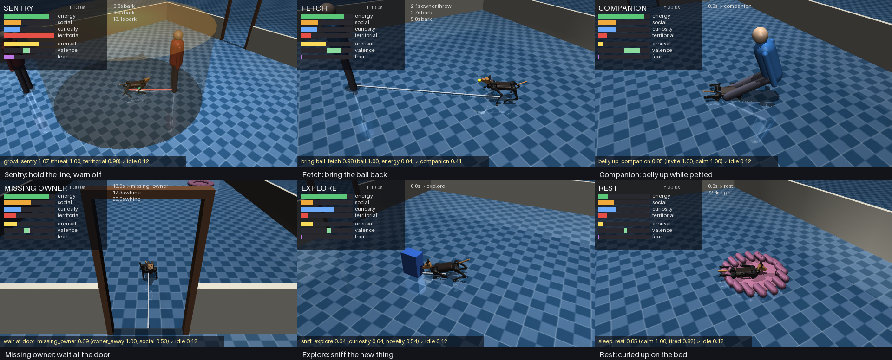
По кадру из каждого режима.
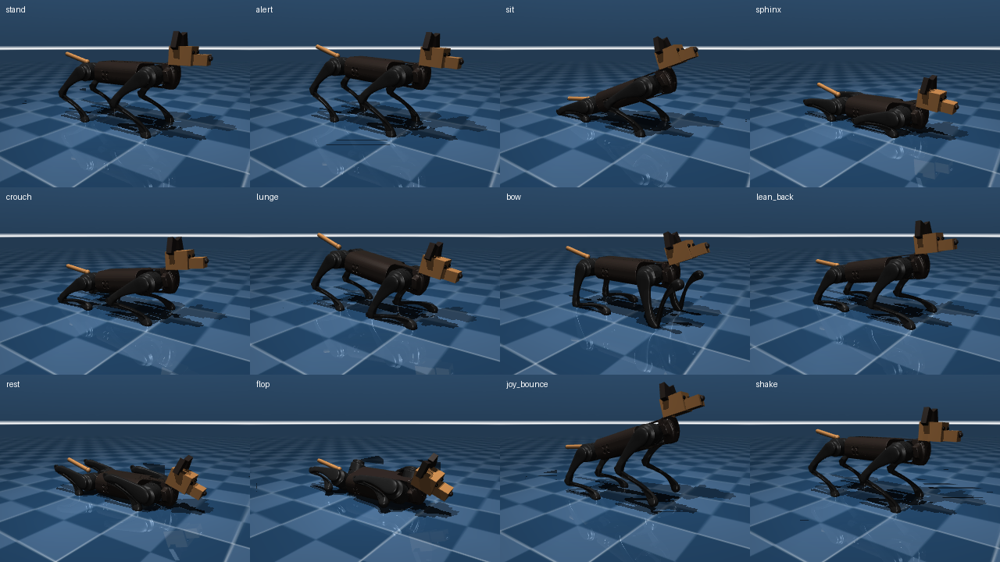
Библиотека поз.
Ограничения
Люди кинематические и касаются собаки только руками. Пройдёт ли нарушитель, решает явная модель сдерживания, так что метрики охраны оценивают позиционирование и тайминг собаки.
Политика ходьбы Go1 не умеет пятиться и ходить боком, максимум 0.5 м/с. Шаг назад сделан позой.
Восприятие берёт истинные позиции из симуляции через модель сенсора с полем зрения, окклюзией, шумом и пропусками, а не обученный детектор.
ЦКМ МФТИ, RL-агент для схвата объектов по RGB-D
Сентябрь 2026 – Октябрь 2026
Исследовательский проект, Isaac Sim, UR10eМосква, РФ
Построил в Isaac Sim среду для обучения схвату с рандомизацией объектов. Написал собственный Vulkan-слой, который не занимает чужие GPU на сервере.
Обучил RL-агента. Сеть по карте глубины предсказывает шанс успеха схвата для каждой точки и угла, агент берёт лучший.
Проверка в новых случайных позах с полным подъездом руки дала 18/20 и 19/20 на двух объектах. SAC за 5.7 тыс. попыток не научился вообще.
Добавил новый объект, пакет чипсов, и сравнил способы дообучения без забывания старых. Лучший вариант на сейчас — две сети с переключателем по типу объекта, он даёт 88% на новом объекте против 42% без дообучения и сохраняет 95% на старых.
Выявил артефакт рендера, исказивший обучение, и исправил постановку.
Подробнее
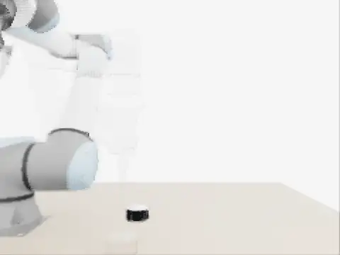
Обученный агент по снимку сверху выбирает, куда и под каким углом хватать. Рука едет из домашней позы, берёт банку и поднимает.
Задача. На столе лежит один из трёх объектов, тетрапак, банка или пакет чипсов. Камера сверху делает снимок, агент решает, куда и под каким углом хватать, рука хватает сверху и поднимает. Успехом считается подъём на 10 см с удержанием 1 с.
Каждый эпизод случаен. Меняются объект, его положение на столе, поворот от 0 до 360° и поза, тетрапак стоит или лежит, чипсы лежат лицом вверх или вниз.
Всё происходит в симуляции. Полный подъезд руки значит, что рука едет из домашней позы моим планировщиком, а не телепортируется к объекту, как в быстрой среде для обучения.
Как устроен агент
Q-карта по идее Zeng et al. 2018, Visual Pushing-Grasping, только сеть значительно проще. Эпизод состоит из одного шага, поэтому обучение сводится к Q-learning с горизонтом 1. После попытки известно, взял агент объект или нет, и выход сети в этой клетке подтягивается к 1 или 0.
RGB-D камераснимок сверху, берётся только глубина
→
Карта высот 128×128кусок стола 70×70 см
→
U-Net8 карт, по одной на угол через 22.5°
→
Лучшая клетка на объектеточка и угол с наибольшим шансом успеха
→
Схватвысота по правилу, верх объекта минус 3 см
Обучение
BCE по выбранной клетке, буфер опыта, ε-greedy от 0.5 до 0.1 за 8 часов, Adam 1e-4.
Быстрая среда
8 столов в одном процессе, рука телепортом встаёт на 10 см над точкой. Попытка занимает 1–2 с вместо 1–2 минут.
SAC
Актор сразу выдаёт x, y и угол. За 5.7 тыс. попыток он выродился в «всегда в центр стола».
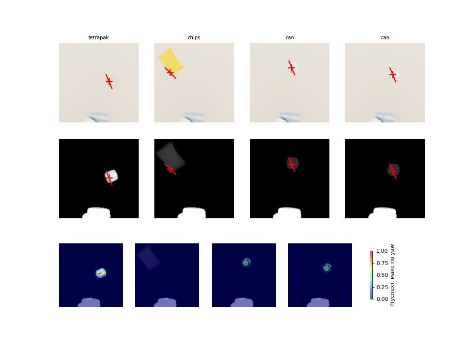
Куда целится агент в конце обучения. Сверху цветной кадр с выбранным схватом, посередине карта высот, которую видит сеть, снизу вероятность успеха. На исходных чипсах размером 15×22 см пятна нет, пакет шире раскрыва пальцев.
Ход работы по шагам
Каждый шаг начинал с проверки, что предыдущий работает. Все прогоны лежат в репозитории вместе с кодом своей версии, неудачные тоже.
Результаты
Доля успехов, в скобках 95% доверительный интервал Уилсона.
Метод
Тетрапак
Банка
Чипсы исходные
Оракул, знает настоящую позу
10/10 [72–100]
10/10 [72–100]
0/10 [0–28]
Baseline, глубина, правило и планировщик
11/11 [74–100]
11/11 [74–100]
—
Q-карта, попытка 2, обучение, последние 4 часа
87% [86–88]
85% [84–86]
0%
Q-карта, попытка 2, быстрая среда
54/58 = 93% [84–97]
64/72 = 89% [80–94]
0/62
Q-карта, попытка 2, полный подъезд руки
18/20 = 90% [70–97]
19/20 = 95% [76–99]
—
Q-карта, попытка 1, RGB-D с багом рендера
4/41 = 10%
3/43 = 7%
0/44
SAC, попытка 1
0/39
0/39
0/50
Агент почти догнал baseline, 90–95% против 100%, интервалы перекрываются. Baseline написан руками, а агент выучил, куда и под каким углом хватать, сам.
Артефакт рендера
После первой ночи обучения не научились ни Q-карта, ни SAC. На визуализациях цветной кадр и глубина показывали разные сцены. На столе с банкой в цвете была коробка, а цвета были бледные.
Гипотеза была в том, что RTX-рендер смешивает новый кадр со старыми, а я после перестановки объектов рендерил всего 2 раза. Проверка показала, что после 2 рендеров кадр целиком от прошлой сцены, после 4 получается смесь, с 8 кадр правильный. Глубина при этом сразу правильная.
Исправление в 10 рендерах перед снимком и только глубине на входе сети.
Во второй попытке я поменял сразу несколько вещей, поэтому весь рост одному багу не приписываю. Но та же сеть сразу после смены входа, без дообучения, взяла 9 из 19, то есть по глубине она за ночь кое-чему научилась.
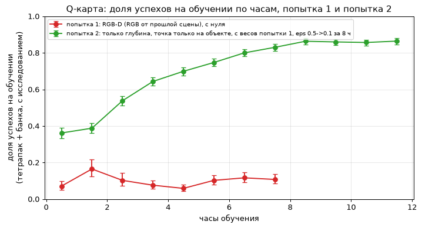
Доля успехов на обучении по часам. Красная линия — попытка 1, зелёная — попытка 2.
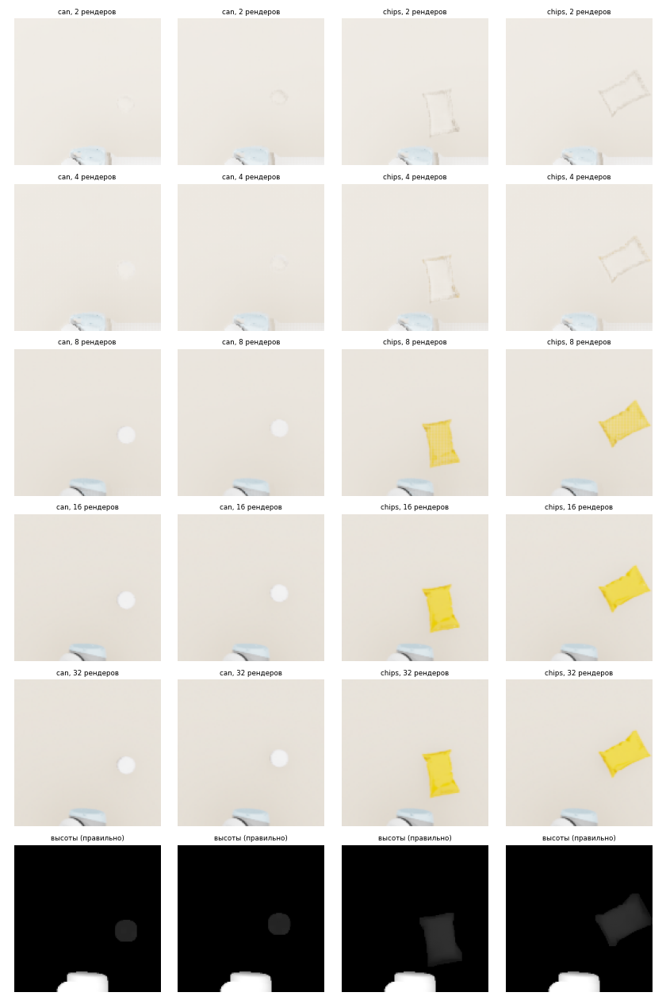
Кадры после 2, 4, 8, 16 и 32 рендеров. Нажмите, чтобы увеличить.
Насколько точно надо хватать
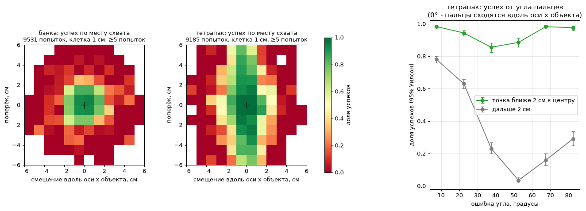
Доля успехов в зависимости от точки схвата относительно центра объекта, 28 тыс. попыток второго обучения.
До центра
Банка
Тетрапак
0–1 см
93%
99%
1–2 см
83%
90%
2–3 см
23%
74%
3–4 см
7%
60%
4–5 см
3%
52%
Банка круглая, но угол пальцев всё равно важен. У центра под углом 90–135° успех 93%, под 45–90° только 61%. Видимо, важна ориентация кисти относительно робота. Агент это выучил и почти всегда берёт банку под 112.5°.
Новый объект без забывания старых
Исходный пакет чипсов не брал никто, даже оракул, потому что он шире раскрыва пальцев. Я уменьшил пакет до 6×2×8.7 см. Оракул берёт его 18 раз из 18, старый агент без дообучения в 42% случаев.
Сравнил шесть способов дообучения при одинаковом бюджете в 6 400 попыток, это около 5 часов на 2080 Ti, затем по 64 попытки на каждый объект. Гипотезы записал до получения результатов.
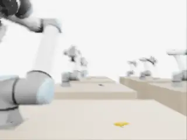
Вариант с двумя сетями и переключателем берёт уменьшенные чипсы на итоговой оценке.
чипсы, новый объекттетрапакбанкаУсы показывают 95% интервал. Наведите на столбец, чтобы увидеть числа.
FiLM с кодом объекта и replay с 20% старых объектов в обучении держат все три объекта на 88–94%, наравне с двумя отдельными сетями. Без старых объектов в обучении, у naive и адаптеров, забывание сильное и быстрое. Один сид и по 64 попытки на объект, у трёх лучших вариантов интервалы перекрываются.
Гипотезы и что получилось
Naive fine-tuning быстрее всех освоит чипсы, но забудет старое частично
Чипсы лучше всех, 95%, забывание мгновенное. К 800 попыткам тетрапак 12 из 32, банка 7 из 32. Но прогноз, что стоячий тетрапак почти не пострадает, не сбылся. В итоге тетрапак упал сильнее банки, 39% против 56%.
У replay забывание будет провалом в начале, а не постепенным сползанием для банки
Банка провалилась к 800 попыткам и вернулась к 29–30 из 32. Тетрапак просел и так и остался, это скорее сползание. Replay быстрее всех дошёл до 80% на чипсах, уже к 800 попыткам.
FiLM в итоге как replay, но провал в начале глубже первое верно
Итог 94, 94 и 89%, близко к replay. Провал банки в начале такой же, как у replay.
Адаптеры почти не забудут старое неверно
Банка упала до 2 из 32 к 1 600 попыткам и в итоге 55%. Заморозки основной сети мало, адаптеры работают на всех объектах, и поправка под чипсы ломает старые.
Обучение с нуля на всех объектах хуже всех, но без перекосов наполовину
На чипсах хуже всех, 78%. Перекос всё же есть, банка 59%, и обучение нестабильное, на 1 600 попытках всё упало, потом вернулось.
Vulkan-слой и общий сервер
Карты с RT-ядрами, нужные для рендера камеры, есть только на одном сервере лаборатории, это две RTX 2080 Ti. Остальные карты — A100 других пользователей.
glibc. На сервере Ubuntu 20.04, а Isaac Sim 4.5 нужна glibc 2.34. Перешил Python через patchelf и подставлял библиотеки через LD_LIBRARY_PATH только своему процессу.
Vulkan. Рендер видит все 8 карт и игнорирует CUDA_VISIBLE_DEVICES, при первом запуске он занял чужую A100. Написал Vulkan-слой, который скрывает от процесса чужие карты.
Соседи. Запуск только через run.sh, с проверкой памяти, блокировкой карты, tmux и watchdog, который снимает процесс при угрозе чужой памяти. Очередь wait_run.sh ждёт свободную карту и продолжает обучение с бэкапа после обрыва.
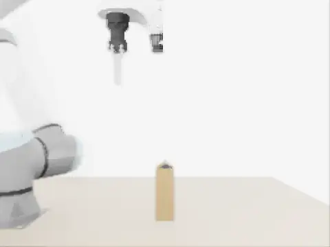
Схват сбоку, версия 9, суставы движутся по одному. Схватил, но камера на запястье давила в стол до 1000 Н. После этого агент хватает только сверху.
Решатель математических задач, который либо даёт правильный ответ, либо честно говорит, что не смог его получить.
Ключевая идея в том, чтобы превратить языковую модель из алгоритма Монте-Карло, который всегда отвечает, но иногда неверно, в алгоритм Лас-Вегас, как в классе ZPP. Задачу решают три независимых метода, рассуждение модели, точное вычисление в SymPy и численная проверка, и ответ выдаётся только если все они совпали.
Подробнее
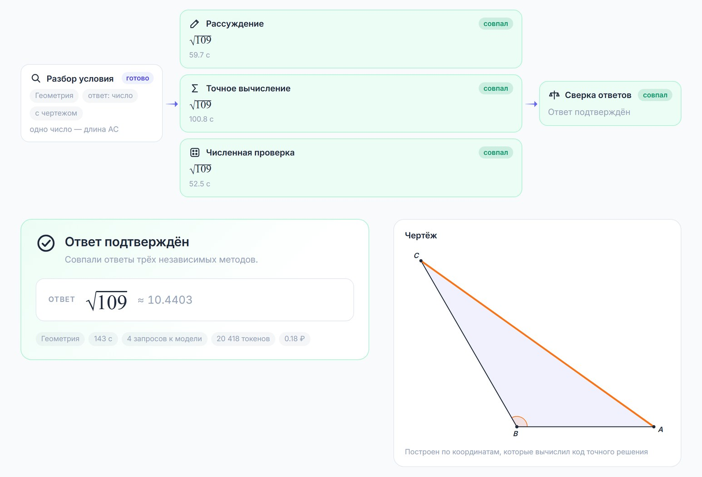
Геометрия. Три метода сошлись на √109, чертёж построен по координатам, которые вычислил код точного решения.
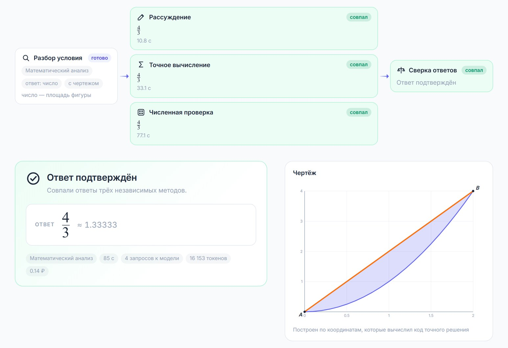
Площадь между параболой и прямой. Ответ 4/3, область заштрихована.
Идея
Языковая модель, решающая задачу, ведёт себя как вероятностный алгоритм типа Монте-Карло. Она всегда выдаёт ответ, но иногда неверный, и неверный ответ выглядит так же уверенно, как верный. Для учебного инструмента это худший вариант: ученик не может проверить ответ сам, а ошибка подаётся как истина.
В теории сложности есть класс ZPP — задачи, которые решает алгоритм типа Лас-Вегас. Такой алгоритм никогда не выдаёт неверный ответ, а вместо этого иногда отвечает «не знаю». Проект переносит эту идею на языковую модель. Модель по-прежнему может ошибаться, но решатель устроен так, чтобы ошибка не доходила до пользователя.
Как это работает
Разбор условиятема, вид ответа, нужен ли чертёж
→
Рассуждениепошаговое решение, как у преподавателя
+
Точное вычислениекод на SymPy, точная арифметика
+
Численная проверкаперебор, Монте-Карло, численные методы
→
Сверкавсе совпали — ответ, иначе отказ
Три метода запускаются параллельно и ничего не знают об ответах друг друга. У них разные источники ошибок: рассуждение ошибается в логике и арифметике, символьный код ошибается в постановке, но считает точно, численная проверка не умеет в хитрые рассуждения, зато перебор не подвержен логическим ошибкам. Чтобы пользователь увидел неверный ответ, ошибиться должны все три метода, и ошибиться одинаково.
Ответы сравниваются в SymPy: √109, sqrt(109) и 10.4403065 считаются одним ответом, порядок корней не важен. Если код упал, модель один раз исправляет его по тексту ошибки, по-прежнему не видя ответов других методов.
Правило выдачи ответа
Ситуация
Что видит пользователь
Ответ дали хотя бы два метода, все ответы совпали, среди них есть точный
Ответ и чертёж
Методы дали разные ответы
«Не удалось получить надёжный ответ»
Ответил только один метод
«Не удалось получить надёжный ответ», подтвердить нечем
Задача на доказательство
Решение помечается как непроверенное
Решатель никогда не выбирает «более вероятный» из несовпавших ответов.
Чертежи по вычислениям
В геометрических задачах код точного решения не только считает ответ, но и выводит фигуру в координатах, а сервер рисует её в SVG. Чертёж — это та же конфигурация, на которой код считал ответ, поэтому если код неверно понял условие, это видно на картинке. Для задач анализа строятся графики функций и закрашенные области.
Эксперименты и ограничения
Насколько решатель приближается к ZPP, проверяется на трёх наборах задач с эталонными ответами: школьные задачи из MATH-500 на русском, вузовские из U-MATH и олимпиадные из OlympiadBench. Главные метрики — точность выданных ответов и покрытие, то есть как часто решатель вообще отвечает. Для сравнения считается та же модель без сверки, как у обычного чат-бота.
Строгой гарантии нулевой ошибки нет: все методы порождает одна модель, и если она одинаково неверно поняла условие, методы могут совпасть на неверном ответе. Следующий шаг — разные модели для разных методов и повторный запуск при расхождении.
Проект Cool Deal носимых систем климат-контроля
Декабрь 2024 – Сентябрь 2025
Основатель, тимлид проектаМосква, РФ
Руководил командой из 5 человек, это 3 инженера, я и продажник, от идеи до рабочего прототипа носимой системы климат-контроля.
Проектировал и собирал прототипы, CAD, датчики, прошивка микроконтроллеров, стендовые испытания.
Привлёк грант 1 млн рублей «Студенческий стартап» на НИОКР и испытания.
Занимался продажами. Провёл 2 пилотных внедрения, по их итогам проверил гипотезу и завершил проект.
Подробнее
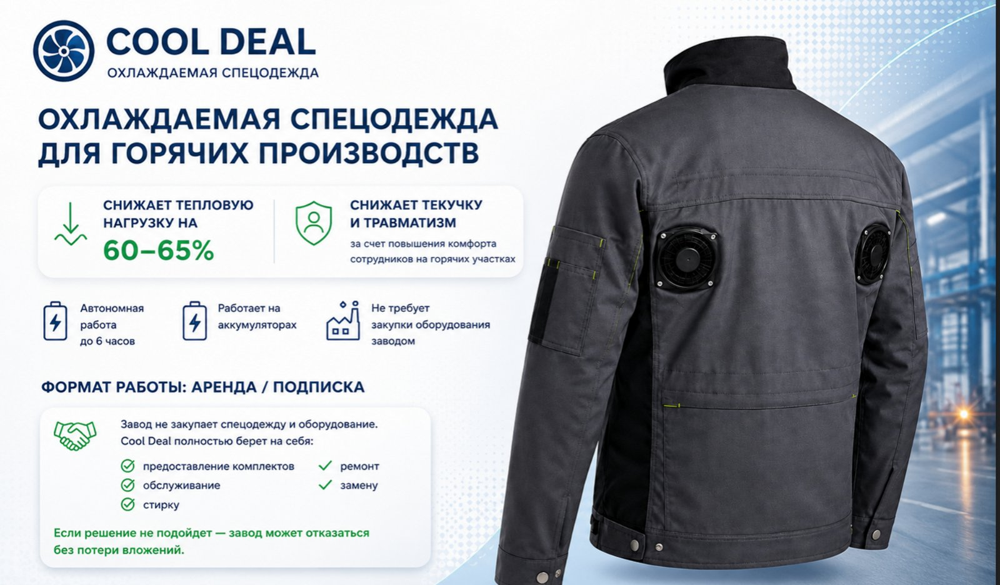
Охлаждаемая спецодежда для горячих производств, предложение для заводов.
Система климат-контроля сначала делалась для мотоциклистов, затем проект перешёл к охлаждаемой спецодежде для горячих цехов. Внутри компрессорное охлаждение с термоэлектрическим субохлаждением в пожаробезопасном исполнении. Команда прошла акселератор «Физтех.Идея», проект занял 956 место в рейтинге «Топ-1000 университетских стартапов» 2024 года, МФТИ выдал письмо поддержки.
Письмо о намерениях IEK Group
Электротехнический холдинг заинтересовался технологией как средством индивидуальной защиты для сотрудников горячих цехов, где идёт литьё пластмасс, работают печи полимеризации, экструзия и сварка. Восемь производственных площадок, прогнозная цена комплекта 20 тыс. рублей, около 2 500 комплектов в год, всего порядка 50 млн рублей.
Письмо о намерениях не обязывает к закупке. В дальнейших обсуждениях сделка не состоялась.